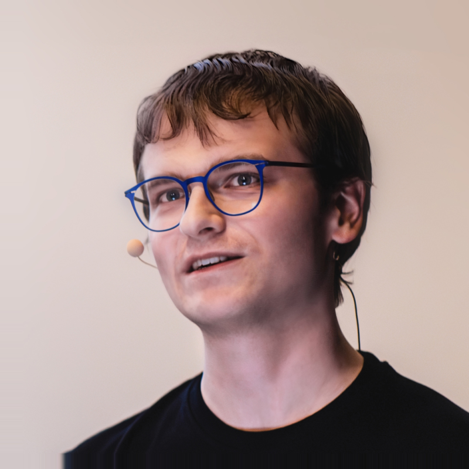

François Martin is a senior full-stack software engineer at Karakun AG in Switzerland, passionate about building high-quality applications. He co-authored the open-source JavaFX frameworks WorkbenchFX and PreferencesFX, and organizes Basel's Hackergarten to help developers get involved with open-source projects.
François is an Oracle ACE Associate and co-authored the ISTQB Test Analyst v4.0 syllabus. He is also part of the content committees for the BaselOne and DevBcn conferences.
François has given 80 talks, workshops, and mentoring sessions across 17 countries. He has spoken at major international conferences, including WeAreDevelopers World Congress, JavaZone, NDC Oslo, Jfokus, KCDC, Devnexus, and Devoxx Greece. He regularly shares practical insights to inspire developers and help teams build better software.